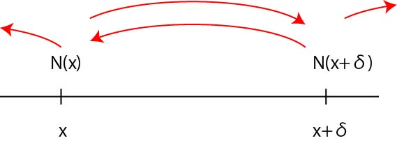
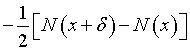
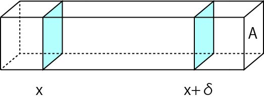
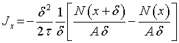
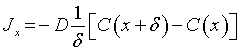
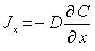

フィックの第一法則
さて，いままで拡散に対する時間，距離に関する定量的な議論をしてきましたが，ここでは基本となる拡散方程式を理解していきましょう．
まずは，フィックの第一法則，です．
ここでは，
生物学におけるランダムウォーク，を参考としました．
また，卒業生である佐川君の資料も参考にしました，ありがとうございます．
まずは，単純な一次元のモデルから考えていきましょう．
ここ，でも書きましたように，
まず，１次元の空間を考えます．
粒子は，この１次元上しか運動できない，とします．
そして，条件として，
１．各粒子は速度ｖでτ秒ごとにδ＝ｖτだけ，右か左に移動する
２．左右に移動する確率は１/２で等しい
３．各粒子は他のすべての粒子と無関係に動く
というものを与えます．
そして，ある地点，ｘ，とそのとなり，ｘ＋δ，を考えます．

ここでは，複数の粒子を扱いますので，ｘ地点には，N(x)個の分子が存在すると考えます．
つまり，単位時間に，
その半分が右へ，半分が左へ，
移動するわけです．
では，ｘとｘ＋δの間の分子の移動は，1/2N（ｘ＋δ）だけ減少し，1/2N(x)だけ上昇することになるので，

となります．さて，これを三次元に拡張するために，断面積Aの直方体を考えます．

時間間隔τあたりの流束は，

となります．少し変形して，

となります．角括弧の各項は，単位体積あたりの分子数となるので，濃度となるので，

となります．ここで，定数Dをこの関係式を用いて利用します．
δ→０の極限では，偏微分となり，

となります．これがフィックの第一法則です．
次に，第二法則を求めてみましょう．